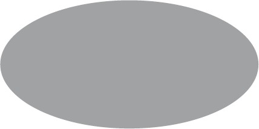
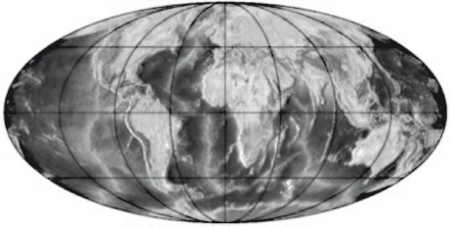
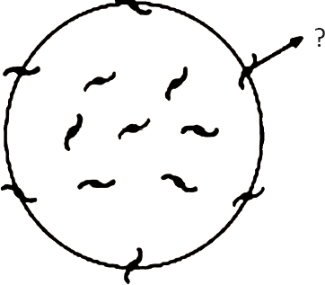

Uzay büyüktür. Öyle böyle değil, gerçekten büyüktür. Ne kadar kocaman, devasa, insanın başını döndüren bir büyüklüğü olduğuna inanamazsın. Demek istediğim, eczaneye varıncaya kadarki o uzun yol kadar olduğunu sanırsın, ama uzayla karşılaştırdığında o yol bir arpa boyu kalır.
Douglas Adams,
Otostopçunun Galaksi Rehberi
İkisinden birini vurmak, fena değil sanırım. Biz kozmologlar evrenin düz olduğu tahmininde bulunmuştuk ve de tahminimizin doğru olduğu anlaşılmıştı, o yüzden boş uzayın gerçekten de enerjisi, aslında evrenin genişlemesine hakim olmaya yetecek kadar enerjisi olduğunun anlaşılmasıyla, bu şok edici kavrayışla o kadar da mahçup olmadık. Bu enerjinin varlığı akla yatkın değildi, ama bu enerjinin evreni yaşanmaz kılmaya yetecek miktarda olmaması ondan daha da anlaşılmazdı. Çünkü boş uzayın enerjisi, daha önce bahsettiğim ilk tahminlerin olması gerektiğini ileri sürdüğü kadarsa evrenin genişleme hızı o kadar fazla olurdu ki bugün evrende gördüğümüz her şey hızla ufkun ötesine sürüklenirdi. Evren yıldızlar, Güneşimiz ve Dünyamızın oluşmasına fırsat kalmadan soğuk, karanlık ve bomboş bir hale gelirdi.
Evrenin düz olduğunu ileri sürmemize neden olan bütün gerekçeler arasında herhalde anlaşılması en basit olanı, evrenin neredeyse düzdür denecek kadar iyi tanınmasından kaynaklanır. İlk zamanlarda, karanlık madde daha keşfedilmeden önce, galaksilerin içinde ve çevresindeki bilinen madde miktarı, düz bir evren için gerekli toplam madde miktarının yaklaşık yüzde 1'ini oluşturuyordu.
Şimdi, yüzde 1 gibi bir oran fazla görünmeyebilir, ama evrenimiz çok yaşlıdır, milyarlarca yıl yaşındadır. Maddenin ya da ışınımın kütleçekimsel etkilerinin genişlemenin gelişimine hakim olduğunu varsaydığımızda, ki biz fizikçiler hep durumun böyle olduğunu düşünmüştük, o zaman evren tam olarak düz değilse, genişlerken düz olmaktan giderek uzaklaşıyor demektir.
Evren açıksa, genişleme hızı, düz bir evrende olduğundan daha hızlı olarak devam eder, maddeyi düz bir evrende olduğundan çok çok daha fazla birbirinden ayırır, maddenin net yoğunluğunu azaltır ve bu yoğunluk düz bir evren için gerekli yoğunluğun sonsuz derecede küçük bir parçasına dönüşür hızla.
Evren kapalıysa genişlemesi daha hızlı bir biçimde yavaşlar ve nihayetinde bu durum evrenin yeniden çökmesine yol açar. Bütün bu süre zarfında, maddenin yoğunluğu, önce düz bir evrende olduğundan daha yavaş azalır, sonra evren çökerken artmaya başlar. Düz bir evrende olması beklenen madde yoğunluğundan uzaklaşma, bu evren modelinde de zamanla artar.
Evren doğumunun üzerinden 1 saniye geçmesinden itibaren neredeyse bir trilyon defa katlanarak büyümüştür. O ilk anda evrenin yoğunluğu düz bir evrenin yoğunluğuna tam olarak eşit değildiyse, o anda düz bir evren için gerekli yoğunluğun yalnızca 10 katı kadardıysa, evrenin bugünkü yoğunluğuyla düz bir evrenin yoğunluğu arasında 100 kat değil, en az bir trilyon kat fark olacaktır. (Her şey görünen maddeden ibaret sayılıp karanlık enerji ve karanlık maddenin katkıları dikkate alınmadığında.)
Bu problem, daha 1970'lerde gayet iyi bilinen bir problemdi ve "Düzlük Problemi" olarak anılıyordu. Evrenin geometrisini düşünmek bir kurşunkalemin masada, sivri ucunun üzerinde dengede durduğunu hayal etmeye benzer. Şu veya bu biçimde en ufak bir dengesizlik hemen düşüvermesine yol açacaktır. Aynı şey düz evren için de geçerlidir. Düzlükten en ufak bir biçimde uzaklaştığınızda, bu uzaklık çabucak büyür. Peki, evren tam olarak düz değildiyse bugün düz olmaya nasıl bu kadar yakın olabilir?
Cevap basittir: Bugün kesinlikle düz olmalı!
Aslında cevap o kadar da basit değildir, çünkü şu sorunun sorulmasını gerektirir: Evrenin içinde bulunduğu ilk koşullar nasıl oldu da düz bir evrenin ortaya çıkmasına katkıda bulundu?
Bu ikinci, daha zor sorunun iki cevabı vardır. İlk cevap 1981'e, o zamanlar Stanford Üniversitesi'nde doktora sonrası araştırmalar yürüten genç kuramsal fizikçi Alan Guth'un evrene dair standart Büyük Patlama tablosuyla ilişkili diğer iki problem, Ufuk Problemi ve Tek Kutupluluk Problemi ile Düzlük Problemi üzerine düşündüğü zamanlara uzanır. Burada bizi Düzlük Problemi dışında, yalnızca Ufuk Problemi ilgilendiriyor, çünkü Tek Kutupluluk Problemi Düzlük ve Ufuk problemlerinin ağırlaşmış bir tekrarından ibarettir.
Ufuk Problemi, Kozmik Mikrodalga Geri Plan Işınımı'nın son derece tektip olmasıyla ilgilidir. Daha önce bahsettiğim gibi ısıda küçük sapmalar, evrenin birkaç bin yaşında olduğu zamanlar madde ve ışınımda meydana gelen, geri plan yoğunluğu ve ısısının tektip olduğu duruma kıyasla 10.000'de 1'den daha düşük bir seviyede kalan yoğunluk değişimlerini temsil eder. Küçük sapmalara odaklandığımızda bizi bekleyen daha derin, daha acil sorun şuydu: Evren en başta nasıl bu kadar tektip oldu?
Nihayetinde, daha önce gösterdiğim, ısıda 100.000'de 3-4 düzeyinde meydana gelen değişikliklerin farklı renklerle yansıtıldığı Kozmik Mikrodalga Geri Plan Işınımı görüntüsü yerine, mikrodalga göğünün çizgisel ölçekte hazırlanmış, ton farklılıklarının ortalama ısısı mutlak sıfırın yaklaşık 2.72 derece üstünde olan mikrodalga geri plan ışınımında - ve + 3 dereceye kadarki ısı değişikliklerini temsil ettiği bir ısı haritasını gösterecek olsam harita şöyle görünürdü:

Yapı bakımından seçilebilir hiçbir şeyin görülmediği bu görüntüyü, Dünya yüzeyinin birazcık daha duyarlı olarak alınmış, farklı renklerin ortalama yarı çapta yaklaşık 500'de 1'e denk gelen değişiklikleri temsil ettiği bir görüntüsüyle karşılaştırın:

İşte bu yüzden evren, çok geniş ölçeklerde inanılmaz bir tektiplik göstermektedir!
Bu nasıl olabilir? Basitçe, ilk zamanlarda evrenin sıcak, yoğun ve termal bakımdan dengede olduğunu varsayabiliriz. Bu, ilk evrenin her tarafı aynı ısıya ulaşıncaya dek sıcak noktaların soğumuş, soğuk noktaların ısınmış olduğu anlamına gelir.
Gelgelelim, daha önce işaret ettiğim üzere, evren birkaç bin yaşındayken, ışık yalnızca birkaç bin ışık yılı yol alabiliyordu, bu da bugünkü gözlenebilir evrenin tamamının küçük bir bölümüne karşılık gelir. (Bu eski uzunluk, bugün gözlenen son yayılmış Kozmik Mikrodalga Geri Plan Işınımı yüzeyinin tamamının haritasında yaklaşık 1 derecelik bir açıya denk gelir.) Einstein bize hiçbir bilginin ışıktan hızlı yol alamayacağını söylemişti. İşte bu yüzden, standart Büyük Patlama tablosunda, bugün gözlenebilir evrenin bir parçasının, o zamanlar, evren daha birkaç bir yaşındayken, aynı açısal ölçekte 1 dereceden daha büyük parçaların varlığı ve ısısından etkilenmiş olması mümkün değildir. Dolayısıyla bu ölçeklerde, gazın zamanla termal bir dengeye oturarak evrenin her yerinde böyle tektip bir ısı ortaya çıkarmış olması imkansızdır!
Bir parçacık fizikçisi olan Guth, evrenin ilk zamanlarında ortaya çıkmış ve bu problemi kavrayışımız açısından bizi ilgilendirebilecek süreçler üzerine kafa yorduğu sırada kesinlikle parlak bir kavrayışa ulaştı. Evren soğurken, örneğin suyun donup buz haline gelmesi ya da demir bir külçenin soğurken mıknatıslanması gibi bir tür faz geçişi yaşadıysa, yalnızca Ufuk Problemi'nin değil, Düzlük Problemi'nin de (dolayısıyla Tek Kutupluluk Problemi'nin de) çözülmesi mümkün olabilirdi.
Şöyle buz gibi soğuk bir bira içmeyi sevenlerdenseniz, başınızdan belki de şöyle bir şey geçmiştir: Buzluktan bir şişe soğuk bira çıkarırsınız, biranın açılmasıyla şişenin içindeki basınç boşaldığında, birden bira tamamen donar, hatta bu sırada şişenin bir kısmı çatlar. Böyle olur, çünkü yüksek basınçta, biranın tercih edilen en düşük enerji hali, sıvı halidir; basınç boşaltıldığındaysa tercih edilen en düşük enerji hali katı hali olur. Faz geçişi sırasında, enerji boşalabilir, çünkü bir fazdaki en düşük enerji halinin enerjisi, diğer fazdaki en düşük enerji halinin enerjisinden daha düşük olabilir. Salınan bu enerjiye "gizil ısı" denir.
Guth şunu fark etmişti: Evren Büyük Patlama sonrası genişlemeyle birlikte soğurken, genişleyen evrendeki madde ve ışınımın konfigürasyonu, bir süreliğine, meta-istikrarlı bir halde "takılıp kalmış", nihayetinde evren biraz daha soğuduğunda bu konfigürasyon ansızın bir faz değişimi geçirerek madde ve ışınımın enerji bakımından tercih edilen temel haline geçmiş olabilirdi. Faz geçişi tamamlanmadan önce evrenin "sahte vakum" konfigürasyonunda depolanmış enerjinin -buna isterseniz "gizil ısı" deyin- faz geçişi öncesindeki süre zarfında evrenin genişlemesini ciddi biçimde etkilemesi mümkündü.
Sahte vakum enerjisi tıpkı kozmolojik bir sabit gibi davranır, çünkü boş uzaya nüfuz eden bir enerji gibi hareket eder. Bu durum evrenin o sıradaki genişlemesinin daha da hızlanmasına yol açacaktır. Nihayetinde, gözlenebilir evrenimiz haline gelecek şey, ışık hızından daha hızlı bir şekilde genişlemeye başlayacaktır. Einstein'ın hiçbir şeyin ışık hızından hızlı hareket edemeyeceğini söyleyen Özel Görelilik Yasası'nı çiğniyormuş gibi görünse de Genel Görelilik Yasası'na göre bu mümkündür. Uzayın kendisi, en azından Genel Görelilik'e göre canı ne istiyorsa yapar. Uzay genişlerken, uzayda kendi hallerinde duran uzak nesneleri, hız eşiğinin üstüne çıkan bir hızla birbirinden ayırabilir.
Öyle anlaşılıyor ki evren bu genişleme döneminde 1028 kattan fazla genişlediyse (bu inanılmaz bir rakamdır, ama evrenin ilk anlarında "şişme" sırasında saniyenin bir bölümünde gerçekleşmiş olabilecek bir şeydir) o zaman gözlenebilir evrenimizdeki her şey bir zamanlar, "şişme"den önce çok daha küçük bir bölge içinde yer alıyordu, "şişme" gerçekleşmemiş olsa ulaşabilecek olduğumuzdan çok daha küçük bir bölge. Daha da önemlisi o kadar küçük bir bölgeydi ki bu tamamının termalize olup kesin olarak aynı ısıya ulaşmasına da zaman yeterli olurdu.
"Şişme" nispeten köken niteliğinde başka bir tahmine de kapı aralar. Bir balon şişirilip büyük, daha büyük hale getirildiğinde, yüzeyindeki eğim de giderek azalır. Sabit ve büyük bir sahte vakum enerjisi sayesinde şişme döneminde olabileceği gibi boyutları katlanarak artan bir evrende de aynı şey gerçekleşir. Hatta "şişme" son bulduğunda (Ufuk Problemi çözüldüğünde), evrenin eğitimi (başlangıçta sıfır değilse) saçma denilecek kadar küçük bir değere iner, o kadar ki bugün bile evren geçerli bir ölçüm yapıldığında esasen düz görünmektedir.
Şişme evrenin hem homojenliğine hem düzlüğüne getirilebilecek, bugün ayakta kalabilir tek açıklamadır; parçacıklar ve etkileşimleriyle ilgili temel ve hesaplanabilir mikroskobik bir kurama dayanır. Ama bunun da ötesinde "şişme" çok daha dikkat çekici bir tahmine de kapıyı aralar. Daha önce betimlediğim üzere, kuantum mekaniğinin yasaları çok küçük ölçeklerde, çok kısa süreler için boş uzayın büyüklükleri arasında çok fazla farklılıklar gözlenen sanal parçacıklar ve alanların kaynayıp köpürdüğü bir kazan gibi görünebileceğini söyler. Bu "kuantum dalgalanmaları" protonlar ve atomların karakterini belirlemek açısından önemli olabilir, ama genelde protonlar ve atomlar geniş ölçeklerde görünmezdir, bize bu kadar gayri tabii gelmelerinin nedenlerinden biri de budur.
Ne var ki "şişme" sırasında, bu kuantum dalgalanmaları, aksi takdirde birbirinden farklı olacak küçük uzay bölgelerinde katlanarak genişleme döneminin ne zaman son bulacağını belirleyebilir. Farklı bölgelerde şişme (mikroskobik olarak) küçük farklarla, farklı zamanlarda son bulurken, sahte vakum enerjisinin ısı enerjisi olarak salınmasıyla birlikte bu farklı bölgelerin her birinde madde ve ışınımın yoğunluğu arasında da küçük farklar olur.
Öyle anlaşılıyor ki şişme sonrasında meydana gelen yoğunluk dalgalanmaları örüntüsü (bunların, aksi takdirde boş uzaydaki kuantum dalgalanmalarından kaynaklandığını vurgulayayım) Kozmik Mikrodalga Geri Plan Işınımı'nda geniş ölçeklerde gözlenen soğuk ve sıcak bölge örüntüsüyle kesin bir uyum göstermektedir. Tutarlılık bir kanıt değildir elbette, ama kozmologlar arasında, bir şey ördek gibi yürüyorsa, ördeğe benziyorsa, ördek gibi vaklıyorsa, o şeyin muhtemelen ördek olduğu yönünde bir kez daha giderek güçlenen bir yaklaşım vardır. Maddenin ve ışınımın yoğunluğunda ortaya çıkan, daha sonra kütleçekime dayalı çarpışmalar sonucu galaksiler, yıldızlar, gezegenler ve insanların oluşmasına neden olan küçük dalgalanmaların ardında gerçekten de şişme varsa, o zaman esasen hiçlik içindeki kuantum dalgalanmaları sayesinde bugün burada olduğumuzu haklı olarak söyleyebiliriz.
Bu o kadar ilginç bir şeydir ki bir kez daha vurgulamak istiyorum. Aksi takdirde tamamen görünmez olacak kuantum dalgalanmaları, şişmeyle donmuş, şişme sonrasında da gördüğümüz her şeyi ortaya çıkaran yoğunluk dalgalanmaları olarak belirmiştir! Daha önce yazdığım gibi hepimiz yıldız tozuysak, kelimenin tam anlamıyla kuantum hiçliğinden geliyor olduğumuz da doğrudur.
Bunun sezgilere aykırılığı o kadar çarpıcıdır ki neredeyse sihir gibi görünür. Ama "şişme"ye bağlı bütün bu el çabukluğunun, özellikle kaygı vericiymiş gibi görünen en az bir yönü vardır. En başta bütün bu enerji nereden gelmiştir? Mikroskobik olarak küçük bir bölge, nasıl olur da bugün gördüğümüz her şeyi açıklayabilecek yeterli madde ve ışınımın bulunduğu, evren büyüklüğünde bir bölgeye ulaşmış olabilir?
Daha genel bir yaklaşımla şu soruyu sorabiliriz: Kozmolojik bir sabitin, yani sahte vakum enerjisinin bulunduğu genişleyen bir evrende enerjinin yoğunluğu nasıl olur da sabit kalır? Nihayetinde böyle bir evrende uzay katlanarak büyür, öyle ki enerjinin yoğunluğu aynı kalsa da herhangi bir bölgedeki toplam enerji bölgenin hacminin artmasıyla birlikte artacaktır. Enerjinin korunumuna ne oldu peki?
Bu, Guth'un nihai "bedava yemek" olarak nitelediği şeyin bir örneğidir. Kütleçekimin, evrenin nesnelerin "pozitif" enerjinin yanı sıra "negatif" enerjiye de sahip olmasını mümkün kılmasına yol açan etkileri de buna dahildir. Kütleçekimin bu yönü madde ve ışınım gibi pozitif enerjili şeylerin, negatif enerji konfigürasyonlarıyla tamamlanmasını, bunların pozitif enerjili şeylerin yarattığı enerjiyi dengelemesini mümkün kılar. Kütleçekim bunu yapmaya boş bir evrende başlayabilir ve sonuçta ortaya dolu bir evren çıkabilir.
İşin içinde bir bityeniği varmış gibi gelebilir, ama aslında birçoğumuzun düz bir evren karşısında gerçekten büyülenmemizin asıl yönünü bu oluşturur. Lise fiziğinden aşina olabileceğiniz bir şeydir bu ayrıca.
Diyelim ki havaya bir top attık. Genelde aşağı düşer. Şimdi biraz da kuvvetli fırlatalım (kapalı bir yerde olmadığınızı varsayıyoruz). Daha yükseğe çıkacak ve geri gelmeden önce daha uzun süre havada kalacaktır. Nihayet iyice kuvvetle fırlattığınızda geri gelmeyecektir. Dünya'nın kütleçekim alanından çıkacak ve kozmosta yol almaya başlayacaktır.
Topun kütleçekim alanından ne zaman çıkacağını nasıl bilebiliriz? Burada basit bir enerji hesabı yaparız. Dünya'nın kütleçekim alanında hareket eden bir nesnenin iki tür enerjisi vardır. Biri Yunanca hareket anlamına gelen kinetik sözcüğünden gelen kinetik enerji, yani hareket enerjisidir. Nesnenin hızına dayanan bu enerji her zaman pozitiftir. Enerjinin diğer bileşenine ise potansiyel enerji (işle ilgili enerji) denir ve genellikle negatiftir.
Bir başka nesneden sonsuz derecede uzakta hareketsiz halde bulunan bir nesnenin toplam kütleçekim enerjisini sıfır olarak tanımlamamamızın nedeni budur, akla yatkın görünmektedir. Kinetik enerjinin sıfır olduğu açıktır, bu noktada potansiyel enerjiyi de sıfır olarak tanımlarız, dolayısıyla toplam kütleçekim enerjisi sıfırdır.
Şimdi, bu nesne diğer nesnelerden sonsuz derecede uzak değilse, sözgelimi Dünya gibi bir nesneye yakınsa kütleçekim yüzünden o nesneye doğru düşmeye başlayacaktır. Düşerken hızı artar, yolda bir şeye, örneğin başınıza çarparsa iş yapabilir, örneğin başınızı yarabilir. Nesne düşmeye başladığında Dünya'nın yüzeyine ne kadar yakınsa, Dünya'ya çarptığında o kadar az iş görür. Bu demektir ki Dünya'ya yaklaşırken potansiyel enerjisi azalır. Ama nesne Dünya'dan sonsuz derecede uzakken potansiyel enerjisi sıfırsa, Dünya'ya ne kadar yaklaşırsa potansiyel enerjisinin o kadar negatif hale gelmesi gerekir, çünkü Dünya'ya ne kadar yaklaşırsa iş yapma potansiyeli o kadar azalır.
Burada tanımladığım biçimiyle klasik mekanikte potansiyel enerjinin tanımı keyfidir. Bir nesnenin potansiyel enerjisini Dünya'nın yüzeyinde sıfır olarak belirlemiş olabilirim, sonra bu nesne sonsuz derecede uzaklaştığında potansiyel enerji büyük bir rakam olacaktır. Sonsuz derecede uzakta toplam enerjiyi sıfır olarak düşünmek fiziksel olarak anlamlıdır, ama en azından tartışmamızın bu noktasında bu bir düzenlemeden ibarettir.
Potansiyel enerjinin sıfır olduğu noktanın nerede belirlendiği bir yana, yalnızca kütleçekim kuvvetine tabi olan nesnelerin harika bir yönü vardır, o da potansiyel ve kinetik enerjilerinin toplamının sabit olmasıdır. Nesneler düşerken potansiyel enerji kinetik enerjiye dönüşür, yere çarptıklarında da kinetik enerji yine potansiyel enerjiye dönüşür, böylece devam eder gider.
İşte bu da, bir nesnenin Dünya'nın kütleçekim alanından çıkması için onu ne kadar hızlı fırlatmamız gerektiğini bulmamızı sağlayacak harika bir hesap cetveli sunuyor bize, çünkü nihayetinde Dünya'dan sonsuz derecede uzaklaşacaksa, toplam enerjisinin sıfıra eşit ya da sıfırdan büyük olması gerekir. Bu durumda benim yapmam gereken şey yalnızca, nesnenin elimden çıktığı andaki toplam kütleçekim enerjisinin sıfıra eşit ya da sıfırdan büyük olmasını sağlamaktır. Nesnenin toplam enerjisinin yalnızca bir yönünü, daha açık bir deyişle elimden çıkma hızını kontrol edebildiğim için, yapmam gereken tek şey topun pozitif kinetik enerjisinin Dünya yüzeyinin çekimi yüzünden negatif potansiyel enerjiye eşitlendiği o sihirli hızı bulmaktır. Topun kinetik enerjisi de potansiyel enerjisi de tıpatıp aynı biçimde topun kütlesine bağlıdır, bu iki enerjinin niceliği birbirine eşit olduğunda kütle de silinir ve böylece bütün nesnelerin Dünya'nın yüzeyinden uzaklaşmalarını sağlayacak tek bir "kalkış hızı" bulunur, o da yaklaşık olarak saniyede 5 mildir, nesnenin toplam kütleçekim enerjisinin kesinlikle sıfır olduğu noktadır.
Peki bütün bunların genel olarak evrenle, özel olarak şişmeyle ne alakası var, diye sorabilirsiniz. Biraz önce Dünya yüzeyinde elimle havaya fırlattığım bir topun macerasını anlatırken kullandığım hesaplamanın aynısı, genişleyen evrenimizdeki bütün nesneler için geçerlidir.
Evrenimizde, bulunduğumuz bölgeyi (Samanyolu Galaksi'sini) merkez alan küresel bir bölge düşünün, birçok galaksi içerecek kadar geniş, ama bugün gözleyebildiğimiz en uzak mesafeler içinde kalacak kadar küçük olsun:
Bu bölge yeterince genişse, ama çok geniş değilse kenarlarda kalan galaksiler Hubble genişlemesi yüzünden bizden tektip bir hızla uzaklaşıyor olacaktır, ama bu galaksilerin hızları ışık hızından çok çok daha az olacaktır. Bu durumda Newton yasaları geçerlidir, özel ve genel göreliliğin etkilerini görmezden gelebiliriz. Başka bir deyişle her nesneye, biraz önce hayal ettiğim üzere toplar ya da uzay gemilerinin Dünya'dan fırlatılmasını betimleyen fiziğin aynısı hakimdir.

Yukarıda gösterilen, dağılımın merkezinden uzaklaşan galaksiyi düşünelim. Şimdi, tıpkı Dünya'dan fırlattığımız top gibi, bu galaksinin de gösterilen alanda yer alan diğer galaksilerin kütleçekim kuvvetlerinden kaçıp kaçamayacağını sorabiliriz. Cevabı bulmak için yapacağımız hesaplama top için yaptığımız hesaplamanın tamı tamına aynısıdır. Galaksinin (ona pozitif enerji veren) dışa doğru hareketine ve (negatif enerjiyi oluşturan) komşularının kütleçekim kuvvetine dayanan toplam kütleçekimsel enerjisini hesaplarız. Galaksinin toplam enerjisi sıfırdan büyükse galaksi sonsuzluğa doğru yol alacak, sıfırdan küçükse duracak, içe doğru düşmeye başlayacaktır.
Şimdi şöyle dikkat çekici bir nokta var: Bu galaksinin toplam kütleçekimsel enerjisini ifade eden basit Newtoncu denklemi, Einstein'ın genişleyen bir evren için geçerli olan Genel Görelilik denklemini tamı tamına verecek şekilde yeniden yazabileceğimizi gösterebiliriz. Galaksinin toplam kütleçekim enerjisini ifade eden terim, Genel Görelilik'te evrenin eğimini ifade eden terim olur!
Peki bu durumda ne buluyoruz? Düz bir evrende, ama yalnızca düz bir evrende, genişlemeyle birlikte hareket eden her nesnenin toplam ortalama Newtoncu kütleçekim enerjisi kesinlikle sıfırdır!
Düz bir evreni bu kadar özel kılan da budur. Böyle bir evrende pozitif hareket enerjisi negatif kütleçekim enerjisiyle kesinlikle silinir.
Boş uzayın enerjisi olmasını mümkün görerek işleri karıştırmaya başladığımızda, bir topun havaya fırlatılması örneğiyle kurduğumuz basit Newtoncu benzerlik yanlış hale gelir, ama sonuç esasen aynıdır. Düz bir evrende, küçük bir kozmolojik sabitin bulunduğu düz bir evrende bile ölçek, yönlü hızların ışık hızından çok düşük olmasını mümkün kılacak kadar küçükse evrendeki her nesneyle ilişkili olan Newtoncu kütleçekim enerjisi sıfırdır.
Aslında bir vakum enerjisiyle, Guth'un "bedava yemeği" daha da ciddi bir hal alır. Evrenin her bölgesi genişleyip daha büyük boyutlara ulaşırken düz olmaya da giderek yaklaşır, öyle ki şişme sırasındaki vakum enerjisinin madde ve ışınıma dönüşmesi sonucu ortaya çıkan her şeyin toplam Newtoncu kütleçekim enerjisi kesinlikle sıfır haline gelir.
Ama yine de evren katlanarak genişlerken şişme sırasındaki enerji yoğunluğunun korunmasını sağlayan bütün o enerjinin nereden geldiğini sorabilirsiniz. İşte burada Genel Görelilik'in bir başka dikkat çekici yönü devreye girer. Nesnelerin yalnızca kütleçekim enerjisi değil, göreli "basınçları" da negatif olabilir.
Negatif basıncı gözümüzde canlandırmak negatif enerjiyi canlandırmaktan daha zordur. Diyelim ki bir balonun içindeki gaz balonun duvarlarına basınç uygular. Bunu yaparken balonun duvarlarını genişletirse balonun üzerinde iş yapmış demektir. Yaptığı iş, gazın enerji kaybedip soğumasına yol açar. Gelgelelim öyle anlaşılıyor ki tam da bu durum yüzünden boş uzayın "negatif" basıncı olduğu için, enerjisi de kütleçekimsel olarak iticidir. Bu negatif basınç sonucu, evren aslında genişlerken boş uzay üzerinde iş yapar. Bu iş de evren genişlerken bile uzayda enerji yoğunluğunun sabit olmasını sağlamaya yarar.
Dolayısıyla, madde ve ışınımın kuantum özellikleri, çok erken zamanlarda boş uzayın sonsuz derecede küçük bir bölgesine ne kadar enerji verirse bu bölge o kadar geniş, o kadar düz olabilir. Şişme son bulduğunda, ortaya madde ve ışınımla dolu bir evren ortaya çıkabilir; bütün bu madde ve ışınımın toplam kütleçekim enerjisi de sıfıra hayal edilebileceği kadar yakın olacaktır.
İşte böyle... Toz duman yatıştığında, bir asırlık çabaların sonucunda evrenin eğimini ölçüp sıfır olduğunu bulduk. Benim gibi birçok kuramcının neden bunu tatmin edici bulmakla kalmayıp son derece manidar bulduğunu anlayabilirsiniz.
Hiç yoktan bir evren... Gerçekten!